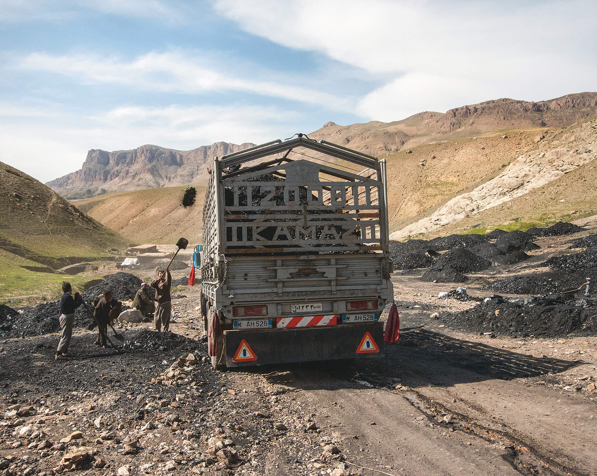

Maior montanha de prata do mundo, por muitos anos Cerro Rico sustentou boa parte da riqueza da monarquia espanhola, e ainda hoje constitui importante fator da balança de exportações do país.
Pedra preciosa conhecida como “Diamante da paz”, vendida pelo governo de Serra Leoa, é exposta em Nova Iorque, 2017
Seu nome se deve à campanha contra a intensa violência que envolvia a exploração mineral do país em décadas passadas, quando essas pedras ganharam o apelido de Diamante de Sangue.
Introdução
Seja por meio de diamantes africanos, prata andina, seja por meio do ouro de Minas Gerais, no Brasil, entre muitas outras possibilidades existentes, os continentes africano e americano têm sua história e geografia marcadas pela
abundância de recursos naturais. No entanto, há séculos potências estrangeiras, países soberanos da própria região ou grandes empresas transnacionais têm explorado jazidas e fontes de recursos desses continentes.
Pelos seus conhecimentos prévios sobre esse assunto, quais recursos naturais são explorados no Brasil?
Mencione ao menos um recurso natural explorado em outro país do continente americano.
Mencione ao menos um recurso natural explorado em um país do continente africano.
Objetivos
Reconhecer os principais recursos naturais da América e da África, bem como os países em que se encontram.
Identificar as características atuais que envolvem a exploração desses recursos naturais, revelando contradições associadas a essa atividade.
Após termos visto as dinâmicas e características das paisagens naturais americanas e africanas, neste capítulo vamos estudar a exploração que os países desses continentes fazem dos recursos subjacentes a essas paisagens. Inicialmente,
veremos os principais recursos espalhados pela natureza da América e da África para, em seguida, abordar aspectos econômicos e geopolíticos que envolvem sua exploração econômica na atualidade.
Distribuição dos principais recursos naturais
Os continentes americano e africano, embora tenham inúmeras diferenças entre si, têm uma característica marcante em comum: a abundância de recursos naturais. Vejamos como se distribuem os principais recursos da América e da África.
Principais recursos no continente americano
Começando pela América do Norte, as jazidas de ferro e manganês localizadas no Planalto Laurenciano, na porção leste do Canadá, e nos Montes Apalaches, centro-leste dos Estados Unidos, foram essenciais para a consolidação de economias
de forte produção industrial nessas áreas. No caso do Canadá, jazidas de outros recursos minerais como gás natural, petróleo, ouro, carvão, cobre, minério de ferro, níquel, urânio e zinco são abundantes e incrementam a produção
industrial. Já na região dos Apalaches, a presença de importantes reservas de carvão mineral também contribuiu para a industrialização.
A produção de petróleo na América do Norte concentra-se, sobretudo, nas regiões do Ártico, do Alasca e do Golfo do México. A produção petrolífera estadunidense tem crescido com a modalidade “petróleo de xisto”, que gera polêmica em
razão dos impactos ambientais que acarreta a técnica do fraturamento hidráulico. Já a produção mexicana sempre foi fortemente voltada ao mercado estadunidense, mas, a partir de 2010, tem se orientado cada vez mais para os mercados
asiático e europeu, que em 2016 importaram juntos mais da metade do petróleo bruto exportado pelo México.
Os recursos florestais também se destacam, especialmente no Canadá. Extensas áreas no norte do país são cobertas pela floresta de coníferas, onde a indústria de papel é altamente desenvolvida. Também os recursos hídricos do país
contribuem ao fornecer os leitos dos rios como vias de transporte de toras a preços muito baixos, bem como fontes de energia para a indústria de alumínio.
Aproximadamente metade do território canadense é coberto por florestas, um fator natural que possibilitou o desenvolvimento de uma importante indústria nos ramos de celulose e de madeira.
Navio com toras de madeira em Colúmbia Britânica, Canadá, 2018
Conforme vimos no capítulo anterior, a vegetação original na América Central é predominantemente composta por florestas equatoriais e tropicais, associadas a climas com grande umidade e predomínio de elevadas temperaturas. Assim, os
países dessa região têm em comum a presença de florestas com copas densas e árvores de grande porte, que se mantêm verdes durante todo o ano. É notável a variedade de espécies, como cipós, bambus, epífitas, mognos, entre outras.
Em virtude da forte presença florestal natural e a existência em geral escassa de recursos minerais nessas regiões, com algumas exceções, a exploração dos recursos florestais e vegetais é economicamente mais relevante que a produção de
minérios. Por isso, atividades como a silvicultura e agricultura de produtos tropicais como café, cana-de-açúcar e frutas têm grande peso na economia desses países. A pesca e o turismo também são importantes atividades que se baseiam
nos recursos naturais desses países, especialmente no caso das ilhas caribenhas.
Cultivo de café na Guatemala, onde o produto é um importante item da pauta de exportação, em 2015
A região andina do continente americano, por conta de suas características geológicas, proporciona elevada produção de minérios, como cobre, prata, zinco e outros. Países como Equador, Chile, Peru e Bolívia contam com consideráveis
reservas de produtos minerais, explorados intensamente desde o período colonial. As condições de trabalho nas minas têm melhorado, no entanto ainda é uma atividade exaustiva e muitas vezes realizada de forma precária, de modo que
prejudica a saúde dos trabalhadores, colocando-os até em riscos de acidentes.
O Chile é o maior produtor e exportador de cobre do planeta. Mais de um terço do consumo mundial do produto provém desse país, produzido em grande parte por empresas transnacionais estrangeiras. O país também explora recursos como o
guano, acúmulos de excrementos de aves utilizados como matéria-prima para fertilizantes, e o salitre, um tipo de sal mineral utilizado também como fertilizante ou mesmo como tempero na preparação de alimentos.
A posição do Chile no topo da produção mundial dos minerais mencionados não se deu de maneira sempre pacífica. Leia a seção a seguir.
Conexões
Guerra do Pacífico
Como seria de se esperar, a abundância de recursos minerais em um local relativamente pouco habitado em meados do século XIX, o Deserto do Atacama e seu entorno, atraiu interesses territoriais dos três países fronteiriços naquela área,
em função principalmente do valor econômico dos minerais da região e do acesso ao porto de Antofagasta. A disputa por esse território resultou no conflito conhecido como Guerra do Pacífico, ocorrido entre 1879 e 1883. O Chile derrotou a
aliança formada por Bolívia e Peru, que perderam territórios importantes – especialmente no caso boliviano, já que o país ficou sem saída para o mar. Até hoje o tema desperta controvérsias entre os vizinhos.
Guerra do Pacífico: 1879-1883
Talita Kathy Bora
Fonte: SQUEFF, Tatiana A. Compreendendo geopoliticamente as disputas territoriais entre Chile – Peru – Bolívia. Cadernos da Escola de Direito e Relações Internacionais (UNIBRASIL), Curitiba, v. 1, n. 24, jan./jun.
2016, p. 75. Adaptação.
Na Bolívia, as exportações de minérios são a principal fonte de divisas externas do país, e a maior parte da produção se dá pela atuação de empresas transnacionais. Além da histórica produção de prata, cujo maior símbolo eram as minas
de Cerro Rico, em Potosí, outros destaques são a produção de estanho e gás natural, que têm o Brasil como maior comprador.
No sul do país, o Salar de Uyuni, com uma paisagem que lembra a de um lago congelado, é considerado o maior deserto de sal do mundo, formado pela evaporação da água de um antigo lago salgado.
Além da própria exploração do sal, de valor muito pequeno devido à grande quantidade disponível, o salar pode conter reservas muito significativas de lítio, importante recurso mineral utilizado para a fabricação de baterias, celulares,
computadores, entre outros produtos. No entanto, o Serviço Geológico dos Estados Unidos (USGS – United States Geological Survey) não divulga dados sobre as reservas bolivianas, pois estas são tratadas como segredo de Estado pelo governo
do país.
Mineradores trabalham em mina de prata de Potosí, Bolívia, 2017
Equador e Venezuela são importantes produtores de petróleo. As reservas venezuelanas são as maiores do planeta. Eles são os únicos países americanos a integrar a Organização dos Países Exportadores de Petróleo (Opep), entidade
plurinacional criada em 1960, com o objetivo de coordenar a exploração dos principais produtores e os preços do produto no mercado internacional.
Colômbia e Peru tendem a se sobressair por outros recursos naturais não minerais. Além de terem grandes extensões de terras ocupadas pela Floresta Amazônica, a Colômbia apresenta solos e clima extremamente adequados à produção de café.
Já o Peru, por contar com condições específicas muito favoráveis das águas oceânicas próximas à sua costa, é um dos maiores produtores mundiais de pescados. Essas condições são o fenômeno da ressurgência, que traz águas frias e repletas
de nutrientes às costas peruanas, como você pode conferir na imagem a seguir.
A ilustração representa o movimento de ressurgência na costa do Peru, onde as correntes frias e profundas emergem em razão do relevo costeiro, trazendo consigo os nutrientes acumulados nas profundezas do Oceano Pacífico. Além de
proporcionar um ambiente aquático altamente piscoso, as águas geladas influenciam a aridez do clima local, por conta do baixo índice de evaporação. Nos anos em que esse fenômeno se enfraquece, temos um aquecimento anormal das águas do
Pacífico na costa peruana, dando origem à ocorrência de outro fenômeno, denominado popularmente El Niño.
Divo. 2012. 3D.
Fonte: GARRISON, Tom. Fundamentos de oceanografia. São Paulo: Cengage Learning, 2010. p. 179.
Os dois países sul-americanos mais extensos, Brasil e Argentina, têm produção mais diversificada de produtos minerais e, especialmente no caso brasileiro, também florestais. Entre os recursos minerais e energéticos brasileiros mais
exportados estão o ferro, cobre, manganês e alumínio, além de óleos brutos de petróleo. A Argentina tem notoriedade especialmente por recursos energéticos, como o gás natural e o petróleo, embora também explore uma série de minerais
importantes, como chumbo, estanho, zinco, entre outros.
Principais recursos no continente africano
Os países do Norte da África se destacam por contarem com importantes jazidas de petróleo (veja o mapa África: recursos minerais e energéticos) e são, em sua maioria, exportadores desse produto. Seus principais compradores
tradicionais são os Estados Unidos, maiores consumidores mundiais, e países europeus, em virtude da proximidade geográfica que facilita a logística de transporte e distribuição. Entretanto, nos últimos anos, assim como tem ocorrido com
as exportações mexicanas de petróleo, a produção africana tem se orientado cada vez mais para o mercado asiático, principalmente para a China.
Assim, importante parcela da economia de países como Argélia e Líbia, também membros da Organização dos Países Exportadores de Petróleo (Opep), provém da exportação de petróleo para países europeus, Estados Unidos e China. Há, também,
outros grandes produtores de petróleo no continente, especialmente na região ocidental e central, como Angola e Nigéria, este último se destaca também pelas grandes reservas de urânio, assim como o Níger, a Namíbia e Gana. Sobre este
último país, leia a seção a seguir.
África: recursos minerais e energéticos
Talita Kathy Bora
ATLAS de Moçambique. Maputo: Editora Nacional de Moçambique, 2013. p. 51. Adaptação.
Segundo dados da Organização Mundial de Comércio, mais de 95% das exportações da Argélia são de derivados de petróleo e produtos minerais, sendo os países da Europa e América do Norte os principais compradores.
Complexo de exploração de gás de Tiguentourine em In Amenas, na Argélia, 2013
Economia de Gana alcança patamares notáveis na África
Tim Mcdonnell, The New York Times, 23 março 2018
Petróleo e cacau impulsionam desenvolvimento do país, mas alto índice de desemprego reduziu otimismo da população
Ainda recentemente, nos anos 1980, Gana, país da África Ocidental, estava em crise, afetado pela fome após uma série de golpes militares. Mas o país tem eleições pacíficas desde 1992, e as perspectivas melhoraram há cerca de uma
década, com a descoberta de grandes reservas oceânicas de petróleo na sua costa.
[...]
Sua projeção de crescimento para 2018, entre 8,3% e 8,9%, pode ultrapassar até a Índia, com seu próspero setor da tecnologia, e a Etiópia, que ao longo da década mais recente foi uma das economias africanas de crescimento mais
rápido graças à expansão da produção agrícola e das exportações de café. Em janeiro [de 2018], o principal índice de ações de Gana alcançou o crescimento mais rápido do mundo, 19%, de acordo com a Bloomberg.
O cacau é a outra commodity de Gana, e os produtores estão ampliando a prosperidade trazida pelo petróleo.
[...]
Mas os economistas e outros especialistas alertaram para que Gana evite a chamada maldição dos recursos naturais, que levou outros países a apostarem demais na extração de petróleo e outros minerais, indústrias frequentemente
associadas à corrupção.
O presidente Nana Akufo-Addo, eleito no final de 2016 em meio a um grande descontentamento com a economia, prometeu dar ouvidos a esses conselhos, canalizando a renda do petróleo para o ensino, a agricultura e a manufatura,
diversificando assim a economia do país.
Seus críticos dizem que um programa prevendo a instalação de novas fábricas para uma série de indústrias (uma em cada um dos 216 distritos de Gana) teve início lento.
McDONNELL, Tim. Economia de Gana alcança patamares notáveis na África. Disponível em: <https://internacional.estadao.com.br/noticias/nytiw,economia-de-gana-alcanca-patamares-notaveis-na-africa,70002233715>. Acesso em:
18 jun. 2018.
Atividades
Com base no que você estudou até aqui, responda às questões a seguir.
Quais são os principais recursos naturais explorados no Canadá?
Quais são os principais recursos naturais explorados nos países da América Central?
Quais são os principais recursos naturais explorados nos países da América do Sul?
De acordo com o texto, o que explica a boa fase da economia de Gana na década que antecede a reportagem, datada de 2018?
Enquanto a região do Norte da África se sobressai em razão da existência de petróleo, no extremo oposto, a África do Sul conta com exuberantes reservas de ouro, carvão mineral, prata, diamantes e outras pedras preciosas. A mineração de
diamantes também ganha notoriedade nos países vizinhos da região meridional do continente, Botsuana, Lesoto e Namíbia, e em países mais distantes, como a República Democrática do Congo e Serra Leoa (veja, novamente, o mapa África:
recursos minerais e energéticos, na página 6).
Entre os recursos naturais no continente africano também é preciso ressaltar a biodiversidade presente nas extensas savanas, nas selvas exóticas e repletas de espécies endêmicas de Madagascar e
na floresta equatorial existente no Vale do Congo. Esta apresenta vegetação com características similares à da Amazônia sul-americana, porém assenta-se sobre um relevo mais variado e acidentado.
Espécies endêmicas são aquelas que existem apenas em um determinado ambiente, não sendo encontradas em outros lugares do mundo. No caso de Madagascar, há inúmeras espécies endêmicas na flora e também na fauna, como o
lêmure.
A Floresta do Congo é a segunda maior área de floresta equatorial e tropical do mundo, superada justamente pela Amazônica. É o hábitat, por exemplo, dos grandes gorilas. Segundo o Fundo Mundial para a Natureza (World Wide Fund for
Nature – WWF), organização não governamental que visa à conservação da natureza, entre os anos de 1990 e 2000, cerca de 91 mil km de floresta foram devastados, colocando em risco a existência desses grandes primatas. Para se ter uma
ideia da dimensão dessa área, basta constatar que ela é equivalente aos territórios dos estados do Rio de Janeiro e do Espírito Santo somados.
A redução das áreas florestais acontece em virtude de diversos fatores: a pressão demográfica, decorrente do crescimento populacional; a falta de planejamento na expansão das áreas de cultivo; a extração da vegetação na ausência de
outros materiais alternativos para sua exploração econômica direta e, por fim, o estímulo financeiro representado pela concorrência internacional por matérias-primas. Esta, conforme vimos no capítulo anterior, acaba por se somar à
pobreza geral da população como condições para que a mão de obra local seja explorada por empreendimentos clandestinos que se inserem no fluxo global de comércio de produtos eletrônicos, às vezes controlados até mesmo por grupos
rebeldes.
Embora a década de 2010 tenha registrado uma redução no ritmo de desflorestamento no mundo, os dados ainda são alarmantes. Entre 2010 e 2015, de acordo com a FAO, a África perdeu 2,8 milhões de hectares de florestas, enquanto na
América do Sul a perda foi de 2 milhões de hectares.
Estimulada principalmente pela indústria do chocolate, a extração ilegal de cacau na Costa do Marfim e em Gana, que respondem juntos por cerca de 65% do comércio mundial de amêndoas de cacau, tem contribuído para a derrubada de
árvores e mesmo florestas inteiras, algumas vezes até em áreas protegidas dentro dos Parques Nacionais. Além da preocupação interna com as condições de trabalho e emprego indevido de crianças, o governo desses países já assinou
acordos internacionais para o controle e a regularização da atividade.
Florestas e savanas africanas: cobertura original estimada e atual
Luciano Daniel Tulio
Fonte: IBGE. Atlas geográfico escolar. 7. ed. Rio de Janeiro, 2016. p. 63. Adaptação.
Observe atentamente o mapa Florestas e savanas africanas: cobertura original estimada e atual e explique o que ele está representando.
Organize as ideias
Cite algum país da América Andina que se destaque pela produção mineral e diga quais os principais minérios que ele exporta.
Leia o texto a seguir.
[...] Antes de baixar a poeira da guerra civil na Líbia, empresas europeias já disputam uma possível redistribuição dos campos de petróleo do país, informa uma reportagem da rede de TV CNN [...].
CRESPO, Sílvio G. Petrolíferas já brigam por redistribuição do petróleo líbio. Disponível em: <https://economia.estadao.com.br/blogs/radar-economico/petroliferas-ja-brigam-por-redistribuicao-do-petroleo-libio/>.
Acesso em: 3 set. 2018.
O que esse trecho revela a respeito do nosso próximo assunto: a relação entre a exploração dos recursos naturais no continente africano e as potências estrangeiras?
Territórios nacionais e interesses internacionais
Em meados do século XIX, enquanto os países da América haviam passado por séculos de colonização e miscigenação, a maioria tendo conquistado a independência, os territórios dos povos africanos e seus recursos naturais, por sua vez,
permaneciam em sua grande maioria sob a administração dos nativos. A exploração do continente por potências estrangeiras até então havia subtraído sobretudo seus recursos humanos, isto é, as pessoas, especialmente os mais jovens.
Ainda que o tráfico negreiro que ocorria na costa tenha afetado o continente como um todo, uma vez que muitos dos escravizados eram retirados de áreas mais ao interior, os recursos naturais eram até então relativamente pouco visados
pelos interesses europeus. Com exceção do sul do continente, na atual África do Sul, onde os primeiros colonos holandeses se instalaram no final do século XVII e logo se interiorizaram, a presença europeia se dava sobretudo por meio de
entrepostos comerciais em algumas localidades litorâneas e poucas incursões aventureiras ao interior.
Por séculos, o tráfico negreiro que ocorria por meio do Oceano Atlântico subtraiu boa parte da mão de obra de regiões inteiras da África. Entre os séculos XVI e XIX, quase 5 milhões de africanos escravizados desembarcaram nos portos
brasileiros. Quantidade quase igual foi levada a outros países da América do Sul, à América Central, Caribe, sul dos Estados Unidos.
A partir da segunda metade do século XIX, a independência das colônias americanas somada à descoberta de importantes jazidas minerais e outros recursos estratégicos no interior da África acabaram por desencadear disputas entre as
potências europeias pelo domínio territorial do continente, não mais apenas comercial. Estas visavam ao controle e à instalação de infraestruturas voltadas à extração e exportação dos recursos africanos, como haviam feito anteriormente
no continente americano. Esse processo, conforme visto no Capítulo 2, foi denominado neocolonialismo.
Ao longo do século XX, uma das marcas territoriais mais visíveis e persistentes deixadas pelo colonialismo na América e o neocolonialismo na África diz respeito à integração dos países entre si e com os demais continentes. Isso, na
época, era feito em grande parte por meio da construção de ferrovias. Portanto, ao observarmos suas redes ferroviárias atuais, a maior parte construída nos séculos XIX e XX, é fácil constatar dois padrões distintos quanto à densidade e
orientação das rotas: densas e conectando diferentes partes do território, no caso dos Estados Unidos e do Canadá; rarefeitas e com conexões fortemente voltadas ao exterior, nos demais países e regiões. Observe o mapa a seguir.
América e África: ferrovias

Talita Kathy Bora
Fonte: DK WORLD atlas. London: Dorling Kindersley, 2013. p. 4, 50 e 70. Adaptação.
No século XXI, os Estados Unidos seguem como a potência com maior presença nos demais países do continente americano e, juntamente com a Europa, conservam uma presença bastante significativa nesses e também nos países africanos.
Entretanto, é a China que, como principal potência ascendente na atual Ordem Mundial, tem visto sua presença nesses continentes crescer de maneira mais destacada. A esse respeito, leia na seção a seguir dois fragmentos de textos
jornalísticos relatando a atual tendência.
Saiba +
Na África, China busca mais que matéria-prima
[...]
A África é o lugar em que a China mais investe. [...] O Império do Meio já superou, há muito, os EUA e as antigas potências coloniais europeias como principal parceiro comercial dos africanos.
No fim de 2016, foi inaugurada a ferrovia entre a Etiópia e Djibuti, construída por empresas chinesas; obras semelhantes estão em execução no Quênia e na Nigéria. Elas são tudo, menos altruístas, e sim parte do projeto Rota da
Seda, com o qual a China pretende expandir suas vias de comércio com vista a se tornar a maior potência econômica mundial.
China como pacificadora?
Além de projetos de infraestrutura e acordos sobre matérias-primas, Pequim aposta cada vez mais em iniciativas militares, tendo estabilidade como palavra-chave. “Na estratégia da China para a África, agora a segurança também
desempenha um papel importante. Isso reflete o pensamento chinês sobre temas e interesses globais”, explica Angela Stanzel, especialista em assuntos chineses do Conselho Europeu de Relações Exteriores (ECFR), em Berlim.
Atualmente, Pequim tem participação em sete de um total de nove missões de paz das Nações Unidas na África. [...]
A estabilidade na África é um interesse comum de europeus e chineses, devendo ser discutida muito mais intensamente no futuro, frisa Stanzel.
NA ÁFRICA, China busca mais que matéria-prima. Disponível em: <https://www.terra.com.br/noticias/na-africa-china-busca-mais-que-materia-prima,3e28ef5bf520a2c5fc3e016c5276d465dp4dqfw3.html>. Acesso em: 18 jun. 2018.
China acelera plano de expansão no Brasil e na América Latina
Para país asiático, protecionismo de Trump abre espaços para maior presença
O protecionismo comercial do presidente [dos EUA] Donald Trump acelerou um plano da China que já estava em andamento: ocupar o espaço dos Estados Unidos como principal parceiro dos países da América Latina e do Brasil.
Uma ação mais agressiva na região é uma tática já assumida por porta-vozes do país asiático. “Enquanto há alguém fechando a porta neste momento, nós estamos abrindo”, disse o encarregado interino de negócios da embaixada
chinesa no Brasil, Yang Song, referindo-se a Trump.
Desde 2013, quando lançou a política “One belt, one road” (“Um cinturão, uma rota” em português) de expansão global baseada na maior conexão com países em desenvolvimento, a China dobrou os desembolsos na América
Latina.
[...]
Infraestrutura, telecomunicações, energia, tecnologia e alimentos são os alvos de interesse dos chineses na região. As transações comerciais da China com a América Latina já superam US$ 200 bilhões, segundo os representantes
chineses.
CHINA acelera plano de expansão no Brasil e na América Latina. Disponível em: <https://www1.folha.uol.com.br/mercado/2018/02/1954899-china-acelera-plano-de-expansao-no-brasil-e-na-america-latina.shtml>. Acesso em: 18 jun.
2018.
Desafios do desenvolvimento
Como é possível perceber, são muitos os problemas e desafios que os países latino-americanos e africanos enfrentam historicamente em relação à gestão e exploração de seus recursos naturais. Em particular, a dificuldade de satisfazer a
necessidade de investimentos externos e de construção de parcerias internacionais vantajosas ou de ganho mútuo tem se mostrado um desafio histórico comum.
A riqueza natural dos países africanos e americanos, nesse contexto, não se converteu em independência econômica, com exceção do Canadá e dos Estados Unidos, países que, mesmo apresentando forte setor de matérias-primas, contam com
economias muito diversificadas e tecnologias avançadas para o processamento delas. Quase todos os demais países desses continentes, em maior ou menor medida, apresentam balanças comerciais fortemente dependentes de atividades ligadas
aos setores primários, como produtos agrícolas e minerais, chamados genericamente de commodities.
Como vimos anteriormente, ao analisar o caso de Gana, o fato de muitos países ricos em recursos naturais apresentarem problemas socioeconômicos como altos níveis de pobreza, baixo dinamismo econômico, elevada dependência da venda de
commodities e altos índices de corrupção leva ao que muitos economistas denominam “maldição dos recursos”. Mais que a abundância em recursos naturais, entretanto, é a organização política e econômica dos países para gerir esses
recursos que explica essa aparente contradição.
Quando investimentos estatais são excessivamente voltados para setores de exploração mineral, tendem a beneficiar as corporações que os controlam em detrimento da população – especialmente os segmentos socialmente mais vulneráveis.
Assim, enquanto as grandes obras de infraestrutura (construção de estradas, centrais energéticas, portos, etc.), por exemplo, exigem grandes montantes de capital para atender a tais atividades, quantidade muito menor de capital e
atenção política é destinada à construção de obras para atender às necessidades sociais mais urgentes, como educação, saúde e infraestrutura urbana. Além disso, as relações trabalhistas que se impõem muitas vezes são de caráter
exploratório: ainda que muitos empregos diretos e indiretos sejam gerados, constata-se com frequência que a qualidade dos empregos se revela precária, socialmente injusta e ambientalmente insustentável.
Aspectos como concentração da economia em poucos setores de atividades, concentração de renda em poucos grupos de elite e instituições políticas pouco confiáveis geralmente explicam boa parte das dificuldades econômicas e da má
distribuição da riqueza nos países latino-americanos, caribenhos e africanos. Veja na seção a seguir a visão crítica de um intelectual africano, mais especificamente camaronês, ou proveniente de Camarões, a esse respeito.
Mineradores sul-africanos protestam por melhores condições de trabalho em mina de platina na cidade de Rustemburgo, África do Sul, 2014
Especialista exige soluções africanas para problemas africanos
Para o advogado N.J. Ayuk é um erro tentar impor soluções ocidentais a problemas africanos, quando se trata de lidar corretamente com os recursos naturais.
A riqueza em matérias primas no continente africano é muitas vezes associada à expressão altamente negativa “maldição dos recursos”. O termo refere-se à ganância de riqueza e poder que as matérias primas muitas vezes desperta nas
elites políticas e económicas, e que leva diretamente à corrupção, com a perda lógica de rendimentos para o coletivo. Em muitos casos esta ganância está também na origem de conflitos sangrentos.
Acresce, segundo a maioria dos peritos, que os países africanos abençoados com reservas de petróleo, ouro e tantos outros recursos, falham na gestão. Em vez de diversificarem a economia, acabaram por basear o crescimento apenas na
exportação. O especialista Ayuk acha que essa solução é simplista: “Por exemplo, não basta os governos da Nigéria, do Congo ou de Angola pegarem num milhão de dólares de rendimento do petróleo e investi-los na agricultura. É preciso
criar as condições necessárias ao desenvolvimento de outros sectores económicos. A começar por leis que facilitem a criação de empresas, a redução dos impostos e a luta contra a corrupção.”
Angola desleixou a agricultura durante décadas
[...]
Países como Angola e a Nigéria são muito dependentes dos rendimentos do petróleo. Durante décadas os governos desleixaram áreas como a agricultura. A quebra drástica do preço do petróleo no mercado internacional causou profundas
crises económicas nestes países, razão de sobra para desenvolver o sector económico tradicional em África, que é a agricultura, diz Ayuk. Mas o especialista considera que também as petrolíferas ocidentais têm responsabilidades neste
contexto. Por isso propõe que as companhias que se instalam em Cabinda ou Douala deixem, por exemplo, de importar toda a comida para os seus empregados da Europa ou dos Estados Unidos: “Cabe-lhes cooperar com agricultores e
prestadores de serviços locais para fomentar as suas capacidades, e ajudá-los onde for necessário, para garantir a existência de fornecedores locais”.
Exemplos africanos de sucesso
O [...] advogado tem gerado alguma controvérsia, também pela sua insistência em chamar a Guiné Equatorial, onde vive e trabalha um exemplo digno de ser seguido. Críticos respondem que Guiné Equatorial é uma ditadura brutal, e está
entre as mais corruptas do mundo. Ayuk diz que compreende as objecções e que concorda que há muita coisa errada naquele país. Ao mesmo tempo insiste que o livro se refere apenas ao sector de petróleo e como encontrar soluções
africanas para problemas africanos: “Há vinte anos, o país não tinha eletricidade. Hoje há aqui mais energia do que em qualquer outro país africano”.
E isso, diz, foi conseguido graças ao gás natural. Admitindo que ainda há muitos défices a colmatar, Ayuk diz que o país onde vive conseguiu progressos notáveis na construção de infraestruturas: “O que eu quero dizer é que também
há histórias de sucesso em África e é nelas que nos devemos concentrar. Em vez de estar sempre à procura do lado negativo”.
Na América Latina, Brasil, Argentina, México e Chile são os países que têm menor dependência da exportação de commodities como fonte quase exclusiva de divisas; já no continente africano apenas a África do Sul, no extremo
meridional, e Egito, Tunísia e Marrocos, no extremo oposto, têm bases industriais consolidadas e economias mais diversificadas, mesmo sendo grandes exportadores de commodities minerais. A forte presença de capital internacional
nesses setores muitas vezes remete-se à incapacidade técnica ou financeira que os Estados e as empresas locais têm para sustentar os enormes investimentos que a exploração mineral muitas vezes exige.
Além disso, a dependência da exportação de commodities deixa as economias nacionais vulneráveis às oscilações dos preços dessas mercadorias no mercado internacional, algo que foge ao controle dos governos. O movimento de queda
prolongada do preço do petróleo no mercado mundial entre 2014 e 2018, por exemplo, impactou fortemente as economias de países como Venezuela, Equador, Líbia, Argélia, Nigéria e Angola, entre outros – inclusive, em menor proporção, o
Brasil. Observe no gráfico a variação do preço do barril de petróleo de tipo Brent entre janeiro de 2004 e janeiro de 2018. Trata-se do óleo originário do Mar do Norte, que serve de parâmetro para as demais variações do produto.
Preços do barril de petróleo tipo Brent no mercado internacional entre janeiro de 2004 e janeiro de 2018
As oscilações no preço do petróleo, como é possível observar entre 2008 e 2010 ou entre 2014 e 2018, afetam os orçamentos dos países exportadores com intensidade proporcional à sua dependência das vendas no mercado
internacional. Da mesma forma que vivem abundância de recursos financeiros nos períodos de alta, sofrem com escassez de moedas internacionais em períodos de baixa.
É possível perceber que o efeito que a exploração dos recursos naturais vai surtir sobre as economias nacionais depende, evidentemente, da organização política, social e econômica das sociedades. Contudo, é necessário levar em
consideração que essa organização sofreu forte influência dos processos de colonização e descolonização, ainda hoje sendo bastante afetada pela atuação das potências e outros fatores geopolíticos e econômicos internacionais. Desse modo,
a “maldição dos recursos”, além de não demandar modelos prontos importados de contextos distintos e, sim, soluções baseadas nas realidades locais e regionais, tem razões tanto internas quanto externas. Não é possível compreender a
questão sem uma visão ampla, que abarque também a atuação dos países ricos e das organizações internacionais na Ordem Mundial.
Olhar geográfico
Exportação bruta anual em bilhões de dólares
Fonte: ATLAS of economic complexity. Disponível em: <http://atlas.cid.harvard.edu/>. Acesso em: 21 maio 2018.
Observe o gráfico ao lado, que representa as exportações de Gana, por categoria de produtos, entre 1995 e 2016. Em seguida, responda:
Que semelhanças é possível perceber entre o comportamento do preço do petróleo e as exportações de Gana na primeira década do século XXI?
Considerando a segunda década do século XXI, como as informações mostradas no gráfico sobre as exportações de Gana entre 1995 e 2016 correspondem ao panorama apresentado no texto Economia de Gana alcança patamares notáveis na
África, na página 7?